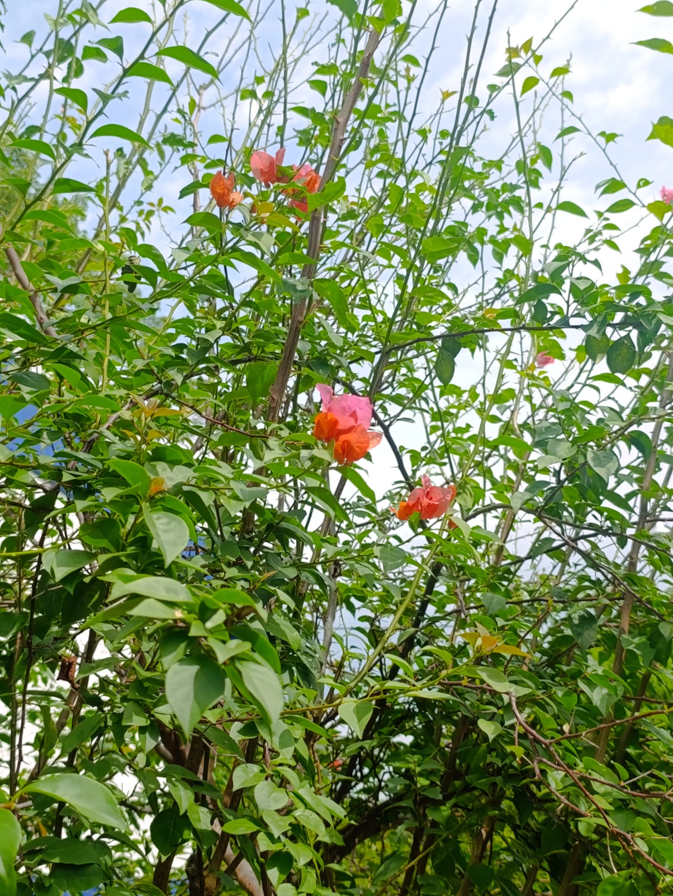

Buganbilia

Galería de la Piñon
📸 Galería de piñón


Nombre científico
Bougainvillea.
Familia
Nyctaginaceae
Descripción
La bugambilia es una planta trepadora y ornamental que puede crecer como arbusto, con tallos largos y algunas espinas. Sus flores son pequeñas y están rodeadas por hojas modificadas de colores llamativos como rosa, morado, rojo o blanco. Sus hojas son simples, alternas, de forma ovalada a elíptica, con margen entero, ápice puntiagudo y color verde, generalmente de textura suave.
Usos
La bugambilia se usa principalmente como planta ornamental para decorar jardines, casas y espacios públicos por sus colores llamativos. También se utiliza en la medicina tradicional, especialmente en forma de té o infusión, como remedio casero para aliviar la tos y algunas molestias de las vías respiratorias.
📍 Lugar donde fue encontrada
Municipio de Huehuetan, Chiapas.